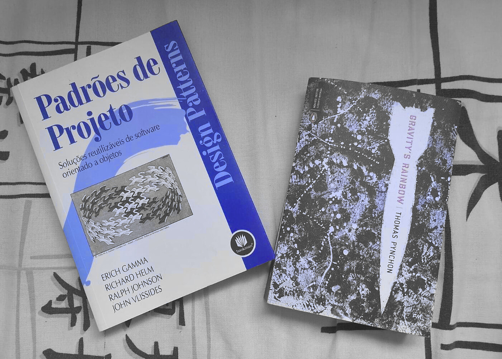

Hello & Welcome!
About me

I'm Pedro. I'm a 19 year old Computer Science student. I enjoy learning about computers, programming them, and sometimes building them. I have dipped my toes into a variety of languages and projects, and consider myself quick to learn, but I have an affinity with C, Go, Python, and general webdev—be it React or plain HTML/CSS/JS.
Goals
I'm looking to study up on backend design this year, mostly with Go—In fact, I've started working on a very simple messenging app in Go! There's not much there yet, but maybe something will come out of it.
I would also like to get a job. With the state of the job market nowadays, it's seeming a bit tough for little junior me, but I have faith... At the very least, I'd like to get a job as a TA at my college.

Personal life
Outside of tech, I also enjoy literature, drawing, and have an ardent passion for music. I really want to get more into film, but haven't yet.
Faves
- Books
- My favourite author is, by far, Thomas Pynchon. Love “Vineland” and “The Crying of Lot 49,” very excited to dive into “Gravity's Rainbow!”
- Music
- My favourite musicians are too numerous to count... but, right now, I'm really into Geese and Milton Nascimento
- Art
- I would like to have a favourite painter at some point. Please check back in a year!
- Film
- ...please check back in a year.
Personal talents
I sometimes create things unrelated to the bossing-around of computers.
Talents musical
I play a decent guitar—not good, mind, but decent. I've been learning how to properly utilise my right-hand recently—I'm self-taught, you see, and as such have created all sorts of nasty habits on the instrument. For example, until recently, I really did think I could fare pretty well by just attacking the strings with my index finger (“strumming.”) “Picking” seemed the realm of the classical, boisterous, conservatory players. But, as it would turn out, you can't do a good samba without learning how to make your thumb, index, middle, and ring fingers dance on the strings.
So I'm working on that.
I also like doing something resembling electronic music, and for a good while, younger me entertained himself by writing little video-game-y instrumental pieces on LMMS using free soundfonts I found online.
By younger me I of course mean current me. I still do that. It's a blast! You should try.
Talents literary
This website is literature! And in more ways than one as, besides the normal blog posts, I also host a lithany of album translations here. I also plan on trying my hand at writing poetry in the future—maybe even writing a webnovel? Or... multiple webnovels?!
...only time will tell.
Well, besides website-related ventures, I wrote a four-part piece of fanfiction once. It was not any good at all—Heavens no!—but it was, like, a good fifteen thousand (15,000) words that made up a cohesive, even somewhat interesting story.
I am happy about that one.
About this website
This website uses a “fork” of りき萌's HTML templating engine, which uses Lua to build static pages. It's sort of like an ad-hoc, Brazil-washed Hugo.
To be honest, this website is very hacked together... the little toy engine struggles to become a framework, and I'm looking forward to refactoring this later down the line (right now, I just need something I can jot down on—I can deal with the cruft...)